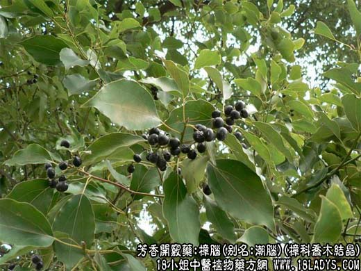

【中药概述】
樟脑，别名潮脑、韶脑、脑子、油脑、树脑，为樟科乔木植物樟的根、干、枝、叶经提炼的结晶品。辛、热。归心、肝、脾经。
1．杀虫止痒：用于疥癣疮痒，有除湿杀虫，止痒之效力，配土槿皮，地肤子，蛇床子，硫黄，苦参等泡酒外用，或配硫黄，枯矾，苦参，黄柏等研末，植物油调敷。
2．消肿止痛：用于跌仆损伤、瘀滞肿痛等多种疼痛证。可用酒精配成酊剂外擦。
3．辟秽开窍：用于突然昏倒或神志昏迷等。
【药效鉴别】
樟脑辛香走窜，内服有芳香开窍、辟秽化浊的作用，治卒然昏倒、热病神昏以及痧胀吐泻等症。
【药理作用】
1.有局部刺激和防腐作用。
2.对中枢神经有兴奋作用。
3.有强心作用。
4.对常见致病真菌有抑制作用。可改善局部血液循环，能促进粘膜分泌。
【化学成分】
樟脑是一种右旋性酮。
【用量用法】
0.5——1g，宜入丸、散剂。不宜入汤剂。外用适量。